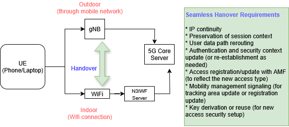

N3IWF- Seamless handover between 5G and Wifi
In this post, I’ll share some insights on some basic considerations in order to be able to utilize N3IWF for seamless handover between 5G networks and Wifi.
If you're looking for a more basic introduction to N3IWF, feel free to check out my earlier post:
Goal

N3IWF for handover between 5G and Wifi
-
A key feature of N3IWF is seamless handover and mobility — for example, a user moving from an outdoor cellular network into an indoor Wi-Fi environment should experience no service interruption.
-
However, not all N3IWF implementations support this functionality. Some vendor solutions may lack this capability, so it’s important to understand the required features and resources when evaluating or deploying an N3IWF solution.
What happens during the seamless handover
During handover between gNB and Wi-Fi via N3IWF, several things happen behind the scenes to ensure a smooth transition:
-
IP continuity is maintained by anchoring the IP address at the UPF, so the user doesn't lose connectivity.
-
Security tunnels (IPSec/IKEv2) are re-established when switching to or from Wi-Fi via N3IWF.
-
Session and mobility context is preserved by the AMF and SMF to avoid re-authentication or session resets.
-
User data is rerouted through the new access path (N3 or N3IWF), while QoS policies may be updated if needed.
Hardware and software
There are specific requirements that must be fulfilled both on the UE side and on the vendor side — particularly within the 5G Core — to support seamless handover using N3IWF.
Hardware requirements (Minimal)
| Device | Purpose |
|---|---|
| WiFi Access Point | Connect UE (phone or laptop) to the N3IWF via WiFi |
| PC/Server running N3IWF | Should support IPSec/IKEv2 and N2/N3 toward the 5G Core |
| PC/server running 5G Core | Components: AMF, SMF, UPF, UDM, AUS, NRF (from Open5GCore, Free5GC, or vendor) |
| Real UE (phone, laptop) | Needs IPSec client and connect SIM/eSIM credentials (with EAP-AKA or EAP-TLS support) |
Software requirements
| Software Component | details |
|---|---|
| N3IWF software | Must support IPSec/IKEv2 + EAP-AKA or EAP-TSL |
| 5G Core software | Need AMF, SMF, UPF, AUSF, UDM (Open5GCore or Free5GC work |
| IPSec/IKEv2 client on UE | For Windows: strongSwan, For Android: built-in if using eSIM |
| Configuration scripts | To define UE Sim profile, keys, and network slicing info |
| (optional) Traffic generatror | ipref, ping, Wireshark for testing data sessions over N3 |
What is expected of a vendor
If a private 5G testbed is to deployed, following are some possible questions to ask: (this is not comprehensive list, and is included as a guideline only)
- Does your N3IWF implementation support interworking mobility between Wi-Fi and 5G NR (gNB)?
- Does the AMF and SMF in your core network support IP continuity across access change (Wifi<->5G)? (this means same PDU session survives across change--cruicial for seamless handover)
- Do you support Mult-Access PDU Sessions (MA-PDU)?
- Is UE route selection policy (URSP) supported? (needed if the UE needs to decide when to switch between Wifi and 5G)
- Do you support IKEv2 + EAP-AKA or EAP-TLS for UE authentication over Wifi?
- Can your system be integrated with UERANSIM or a real gnB for 5G NR?
Summary of key components
| Component | Required | Notes |
|---|---|---|
| gNB/5G radio | No | Not needed without handover or NR access |
| N3IWF | Yes | Needs IPSec + Support for real UEs |
| 5G Core | Yes | Use Open5GCore, Free5GC, etc. |
| Real UE | Yes | Must support IPSec + SIM Credentaials |
| WiFI AP | Yes | Acts as non-3GPP access network |
Appendix: 1G to 5G technology names
A side note on mobile communication technology names.
| Technology | Name |
|---|---|
| 1G | AMPS, NMT |
| 2G | GSM, CDMA |
| 3G | UMTS(WCDMA), CDMA2000 |
| 4G | LTE, LTE-Advanced |
| 5G | NR (New Radio) |
Appendix: Abbreviations:
- AMF: (Access and Mobility Management Function): Manages connection and mobility for devices in the 5G core network.
- EAP-TLS (Extensible Authentication Protocol-Transport Layer Security):It’s a secure authentication protocol used in networks.
- gNB (gNodeB): The 5G base station that connects user devices to the network (like the 4G eNodeB).
- MA-PDU (MAC Service Data Unit Protocol Data Unit): A data packet at the MAC layer in 5G NR.
- NR (New Radio): The 5G radio access technology (air interface).
- PDU (Protocol Data Unit): A generic term for a data packet at any layer of the network protocol stack.
- SMF (Session Management Function): Controls session establishment, modification, and release in the 5G core.
- UE (User Equipment): The device used by the end-user (e.g., smartphone, IoT device).
- UERANSIM: An open-source 5G UE and RAN simulator for research and testing.